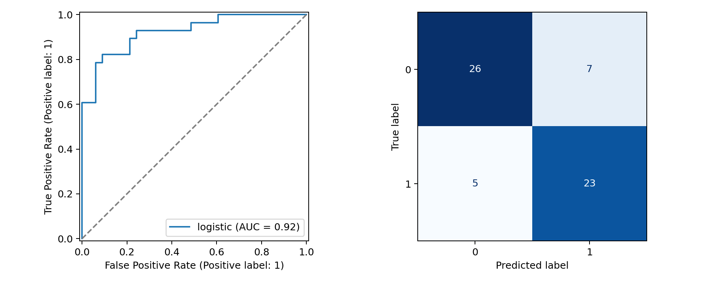

AIMLCZG523 / MLOPS ASSIGNMENT 01 / MEASURED EVIDENCEModel selection and final holdout
| Model | Nested CV AUC ± SD | Nested CV recall |
|---|
| logistic | 0.9151 ± 0.0318 | 0.8186 |
| forest | 0.9118 ± 0.0283 | 0.8190 |
Selected logistic regression. Holdout ROC-AUC 0.9232; accuracy 0.8033; recall 0.8214.

Threshold 0.5 was fixed before holdout evaluation. Five false negatives and seven false positives; no clinical validation claimed.